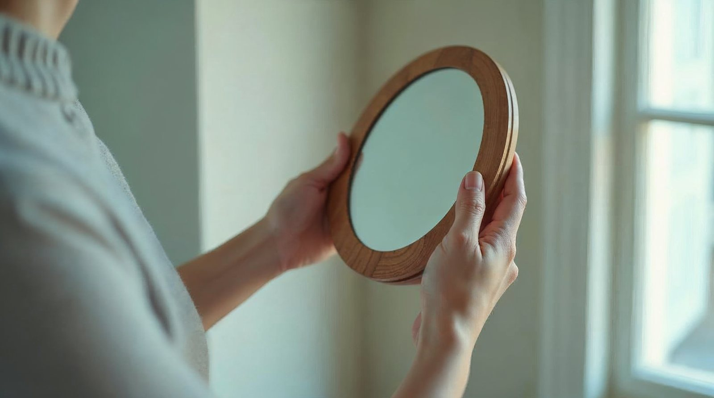
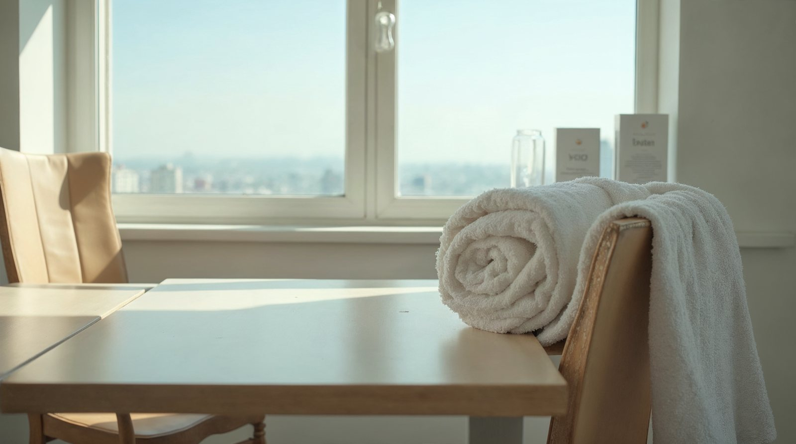
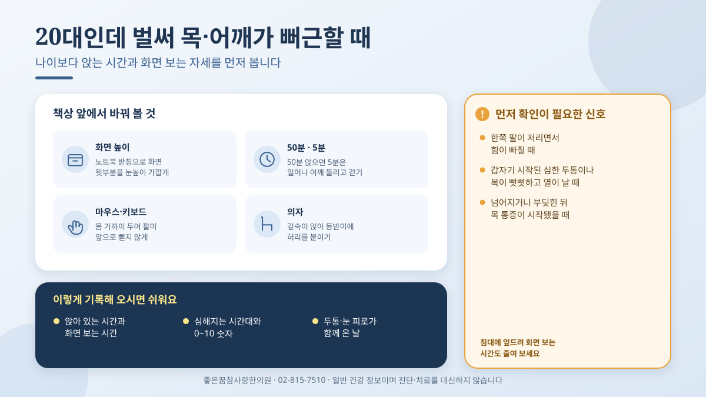

이종호 한의사 감수좋은꿈참사랑한의원 대표원장 (한의사 면허번호 19769)발행 2026-11-23 · 수정 2026-11-26
이 글의 차례
- 왜 이런 불편이 생길 수 있나요
- 먼저 이렇게 여쭙니다
- 일상에서 먼저 해 볼 수 있는 것
- 환경별로 이렇게 바꿔 보세요
- 예를 들면 이런 경우입니다
- 한의원에서 함께 살필 수 있는 경우
- 자주 하는 오해
- 스스로 점검해 보세요
- 이렇게 기록해 오시면 상담이 쉬워집니다
- 근육 뭉침, 목 디스크, 긴장성 두통은 어떻게 다른가요?
- 눈의 피로와 목 뻐근함은 왜 함께 올까요
- 하루 일과 속에서 이렇게 끊어 주세요
- 시험 기간이나 마감 주에는 어떻게 버틸까요?
- 운동은 어떤 것부터 시작하면 좋을까요?
- 베개와 자는 자세는 어떻게 살필까요?
- 지하철과 버스에서 보내는 시간도 계산에 넣어 주세요
- 치료를 받는 동안에는 무엇을 함께 하면 좋을까요?
- 이런 증상은 먼저 확인이 필요합니다
- 얼마나 지켜보고, 언제 확인하면 좋을까요
- 처음 오시면 이렇게 진행합니다
- 관련 글
"아직 20대인데 왜 벌써 이렇게 뻐근하지?"라는 말씀을 자주 듣습니다. 목과 어깨의 뻐근함은 나이보다 하루에 앉아 있는 시간과 화면을 보는 자세의 영향을 더 크게 받는 경우가 많고, 노량진·상도동처럼 오래 앉아 공부하거나 일하는 분이 많은 동네에서는 흔한 고민입니다.
왜 이런 불편이 생길 수 있나요
- 노트북이나 휴대폰을 내려다보면 머리 무게를 받치느라 뒷목과 어깨 근육이 오래 긴장할 수 있습니다.
- 마우스와 키보드가 멀면 팔이 앞으로 뻗어 어깨가 들린 채 굳기 쉽습니다.
- 운동이 적고 잠이 부족하면 쌓인 긴장이 하룻밤 사이에 풀리지 않기도 합니다.
- 시험이나 마감처럼 긴장한 시기에는 어깨에 힘이 들어간 채 지내는 경우가 많습니다.
- 퇴근이나 공부를 마친 뒤에도 휴대폰과 게임으로 같은 자세가 이어지면 쉬는 시간이 사실상 없어집니다.
먼저 이렇게 여쭙니다
- 하루에 책상이나 노트북 앞에 앉아 있는 시간은 대략 얼마나 되나요?
- 화면이 눈높이보다 낮아서 고개를 숙이고 보지는 않나요?
- 뻐근함이 오른쪽과 왼쪽 중 한쪽에 더 심한가요?
- 두통이나 눈 피로가 함께 오나요?
- 운동은 얼마나 하고, 잠은 몇 시간 정도 주무시나요?
- 팔이나 손가락으로 저림이 내려간 적이 있나요?
일상에서 먼저 해 볼 수 있는 것
- 노트북 아래에 받침을 두어 화면 윗부분을 눈높이에 가깝게 맞추기
- 50분 앉으면 5분은 일어나 어깨를 돌리고 걷기
- 마우스와 키보드를 몸 가까이 두어 팔이 앞으로 뻗지 않게 하기
- 의자 깊숙이 앉아 등받이에 허리를 붙이기
- 침대에서 엎드려 화면을 보는 시간 줄이기
- 노트북을 오래 쓴다면 별도 키보드와 마우스를 연결해 화면과 손 위치를 나누기
- 휴대폰은 눈높이로 들어 보고, 잠들기 전 누워서 보는 시간 줄이기
환경별로 이렇게 바꿔 보세요
- 독서실·스터디카페: 책 받침대로 책을 세워 고개 숙이는 각도 줄이기, 쉬는 시간에는 자리에서 일어나 복도 걷기
- 사무실: 모니터 윗선을 눈높이에, 팔꿈치는 90도 안팎으로 책상에 올려 어깨가 들리지 않게
- 집 책상·식탁: 의자가 낮으면 방석으로 높이를 맞추고, 소파에 기대 노트북을 무릎에 올려 쓰는 시간 줄이기
- 카페: 낮은 테이블에서는 오래 앉지 말고 한 시간 안팎으로 자리를 옮기거나 일어나기

예를 들면 이런 경우입니다
- 예를 들어 노량진에서 하루 열 시간 가까이 독서실에 앉아 공부하는 수험생이라면, 오후가 될수록 뒷목이 무겁고 저녁에는 두통까지 오기 쉬워 책 받침대와 쉬는 간격부터 함께 정하고, 잠과 긴장 정도도 함께 여쭙니다.
- 예를 들어 노트북 하나로 재택근무를 하는 20대 직장인이라면, 화면이 낮아 고개가 계속 숙여지는 경우가 많아 받침대와 별도 키보드만으로도 자세가 달라지는지 1~2주 지켜보시기를 권합니다.
- 예를 들어 퇴근 뒤 밤늦게까지 게임이나 영상 편집을 하는 분이라면, 낮 자세보다 밤 자세가 더 오래 이어지는 경우가 있어 하루 전체의 화면 시간을 함께 나눠 봅니다.
한의원에서 함께 살필 수 있는 경우
- 앉아 있는 날마다 목과 어깨가 뭉치고 저녁이면 머리가 무거운 경우 자세와 근육의 긴장 정도를 함께 살핍니다.
- 어깨가 앞으로 말리고 등이 굽는 느낌이 드는 경우 평소 앉는 자세와 움직임을 함께 살핍니다.
- 잠을 자도 뻐근함이 이어지는 경우 수면 자세와 베개, 하루 리듬을 함께 살핍니다.
좋은꿈참사랑한의원에서는 앉은 자세와 고개를 돌리는 범위, 어깨가 올라가는 정도를 함께 보고 뭉친 곳을 확인합니다. 필요하다고 판단될 때 침이나 추나 등을 상태에 맞춰 정하고, 귀가 전에는 책상 환경에서 바꿔 볼 점을 알려 드립니다.
자주 하는 오해
- 젊으니까 쉬면 저절로 풀린다고 여기기 쉽지만, 앉는 환경이 그대로면 같은 뻐근함이 되풀이되기 쉽습니다.
- 목에서 소리가 날 때까지 꺾으면 시원하다며 자주 하는 분도 있는데, 억지로 꺾기보다 천천히 돌리고 늘리는 편이 좋습니다.
- 비싼 의자만 사면 해결된다고 생각하기 쉬운데, 화면 높이와 쉬는 간격이 함께 바뀌어야 합니다.
스스로 점검해 보세요
- 하루 8시간 넘게 책상이나 화면 앞에 앉아 있다
- 한 번 앉으면 1시간 넘게 일어나지 않는다
- 노트북 화면을 내려다보며 쓴다
- 오후나 저녁이 되면 뒷목이 무겁고 머리가 띵하다
- 고개를 한쪽으로 돌릴 때 걸리는 느낌이 있다
- 잠들기 전 누워서 휴대폰을 30분 넘게 본다
- 일주일에 땀 날 정도로 움직이는 날이 거의 없다
세 개 이상 해당한다면 오늘부터 화면 높이와 쉬는 간격 한 가지씩 바꿔 보세요.

이렇게 기록해 오시면 상담이 쉬워집니다
- 하루 중 앉아 있는 시간과 화면을 보는 시간
- 뻐근함이 심해지는 시간대와 0~10 숫자
- 두통이나 눈 피로가 함께 온 날
- 책상, 의자, 화면 높이를 찍은 사진 한 장
근육 뭉침, 목 디스크, 긴장성 두통은 어떻게 다른가요?
젊은 분들이 가장 걱정하시는 것이 "혹시 목 디스크는 아닐까" 하는 부분입니다. 증상이 나타나는 모양을 보면 어느 쪽에 가까운지 짐작해 볼 수 있습니다.
- 근육이 뭉친 경우: 뒷목과 어깨 위쪽이 넓게 무겁고, 손으로 누르면 시원하면서 아프며, 자세를 바꾸거나 쉬면 조금 가벼워집니다.
- 목에서 신경이 눌리는 경우: 고개를 뒤로 젖히거나 한쪽으로 기울일 때 날개뼈 안쪽이나 팔, 손가락까지 저림이 뻗칩니다.
- 긴장성 두통이 겹친 경우: 머리 둘레를 띠로 조이는 듯한 두통이 오후에 심해지고, 뒷목이 뻐근한 날과 함께 옵니다.
저림이 팔로 내려가는지, 두통이 어느 시간대에 오는지에 따라 진찰할 순서와 치료 계획이 달라져, 첫 진료 때 이 부분을 꼼꼼히 여쭙습니다.
눈의 피로와 목 뻐근함은 왜 함께 올까요
화면을 오래 보면 초점을 맞추느라 눈 주변 근육이 쉬지 못하고, 글자를 더 잘 보려고 고개가 저절로 화면 쪽으로 빠집니다. 그 자세가 몇 시간 이어지면 뒷목과 머리 뒤쪽이 함께 굳기 쉽습니다.
집중할 때 눈을 덜 깜빡이고 어금니를 꽉 무는 습관이 있는 분도 많은데, 턱에 들어간 힘이 관자놀이와 목옆으로 이어지기도 합니다. 그래서 목만 풀어서는 금세 돌아오는 경우가 있습니다.
- 20분쯤 화면을 봤다면 20초 정도 먼 창밖을 바라보기
- 화면 밝기를 방 조명과 비슷하게 맞추고 글자 크기를 한 단계 키우기
- 집중하다가 어금니가 맞물려 있지 않은지 가끔 확인하고 입술만 살짝 다물기
하루 일과 속에서 이렇게 끊어 주세요
뻐근함은 한 번에 크게 풀기보다 작은 쉼을 여러 번 넣는 쪽이 생활에 붙이기 쉽습니다.
- 아침: 일어나자마자 휴대폰을 보기 전에 어깨를 귀 쪽으로 올렸다 툭 떨어뜨리기를 다섯 번
- 오전: 회의나 수업 사이에 일어나 물 한 잔 마시고 오기
- 점심: 식사 뒤 바로 자리에 앉지 말고 10분 정도 걷기
- 오후: 가장 무거워지는 시간대에 알람을 맞춰 가슴을 펴고 턱을 살짝 당기는 동작 하기
- 밤: 잠들기 30분 전에는 화면을 내려놓고, 따뜻한 물로 씻으며 목 뒤를 데우기
시험 기간이나 마감 주에는 어떻게 버틸까요?
할 일이 몰리는 주에는 자세를 신경 쓸 여유가 없습니다. 그럴수록 완벽하게 지키려 하기보다 꼭 지킬 두세 가지만 정해 두는 편이 현실적입니다.
- 한 과목이나 한 작업이 끝날 때마다 일어나 어깨를 크게 다섯 번 돌리기
- 커피는 오후 이른 시간까지만 마시고, 저녁에는 따뜻한 물이나 보리차로 바꾸기
- 잠을 줄이더라도 매일 같은 시각에 일어나 몸의 리듬을 지키기
긴장이 클 때는 어깨가 귀 쪽으로 올라간 채 굳어 있는 경우가 많습니다. 숨을 길게 내쉬며 어깨를 툭 떨어뜨리는 동작만 틈틈이 해도 저녁의 무거움이 덜하다는 분이 많습니다.
운동은 어떤 것부터 시작하면 좋을까요?
목과 어깨가 자주 뻐근한 분은 앞쪽 가슴 근육은 짧아지고 등 위쪽 근육은 약해져 있는 경우가 많아, 등을 펴 주는 운동부터 시작하길 권합니다.
- 턱 당기기: 벽에 뒤통수와 등을 대고 서서 턱을 뒤로 살짝 당겨 5초 머물기를 열 번
- 밴드 당기기: 고무 밴드를 양손으로 잡고 가슴 앞에서 양옆으로 벌리며 날개뼈 모으기
- 걷기와 수영: 팔을 크게 흔들며 걷거나 배영처럼 가슴을 여는 운동 섞기
헬스장에서 무거운 무게로 어깨를 으쓱하는 운동만 반복하면 오히려 목 옆이 더 굳는 분도 있어, 처음에는 가벼운 무게로 등 근육을 쓰는 데 집중해 보세요.
베개와 자는 자세는 어떻게 살필까요?
낮에 쌓인 긴장이 밤사이 풀리지 않는 분은 베개를 한 번 점검해 볼 만합니다.
- 바로 누웠을 때 이마와 턱이 수평에 가깝고, 목 뒤가 뜨지 않는 높이가 무난합니다.
- 옆으로 누울 때는 어깨 너비만큼 높아야 고개가 아래로 꺾이지 않습니다.
- 엎드려 자는 습관은 목을 한쪽으로 오래 돌리게 해 아침 뻐근함의 원인이 되기 쉽습니다.
새 베개를 사기 전에 수건을 접어 높이를 바꿔 보며 아침 느낌을 비교해 보시면 맞는 높이를 찾기 쉽습니다.
지하철과 버스에서 보내는 시간도 계산에 넣어 주세요
책상 앞 시간만 세다 보면 놓치기 쉬운 것이 이동 시간입니다. 출퇴근이나 통학길 한 시간 내내 고개를 숙여 휴대폰을 보면, 하루에 고개를 숙인 시간이 생각보다 훨씬 길어집니다.
- 서서 갈 때는 휴대폰을 가슴 높이까지 올리고 팔꿈치를 몸에 붙여 받칩니다.
- 앉아서 갈 때는 가방을 무릎 위에 올리고 그 위에 팔을 얹어 화면 높이를 올립니다.
- 몇 정거장은 화면을 내려놓고 창밖을 보거나 눈을 감고 쉬어 갑니다.
- 무거운 가방을 한쪽 어깨에만 메지 말고 양쪽 끈을 모두 씁니다.
치료를 받는 동안에는 무엇을 함께 하면 좋을까요?
침이나 추나로 굳은 곳이 한결 부드러워졌더라도, 다음 날 같은 자리에서 같은 자세로 열 시간을 보내면 다시 뭉치기 쉽습니다. 그래서 진료 때마다 집과 책상에서 바꿔 볼 것 한 가지를 함께 정합니다.
이번 주에는 화면 높이, 다음 주에는 쉬는 간격처럼 하나씩 더해 가면 부담 없이 생활에 붙일 수 있습니다. 바꿔 본 뒤의 느낌을 메모해 오시면 다음 계획을 세우기 쉽습니다.
이런 증상은 먼저 확인이 필요합니다
- 한쪽 팔에 힘이 빠지거나, 팔 저림이 점점 심해지는 경우
- 갑자기 시작된 심한 두통이 있거나, 열과 함께 목이 뻣뻣한 경우
이런 신호가 있으면 한의원보다 가까운 병원이나 응급실을 먼저 찾으세요.
얼마나 지켜보고, 언제 확인하면 좋을까요
- 화면 높이와 쉬는 간격을 바꾼 뒤 1~2주 정도는 뻐근한 시간대와 0~10 숫자를 적으며 지켜보세요.
- 환경을 바꿨는데도 2~3주 넘게 매일 같은 뻐근함과 두통이 이어지면 상담을 받아 보세요.
- 아침에 일어날 때부터 목이 굳어 고개를 돌리기 어려운 날이 일주일에 여러 번이라면 기록을 가지고 오세요.
처음 오시면 이렇게 진행합니다
첫 방문에는 접수 때 기본 정보를 적고, 진료실에서는 먼저 맥을 짚습니다. 맥을 짚으면서 불편한 곳과 시작된 시기, 하루 앉아 있는 시간과 잠을 여쭙고, 이어서 신체 진찰로 고개를 앞뒤·좌우로 움직여 보며 어느 방향에서 막히고 아픈지 확인합니다. 필요하다고 판단될 때 초음파로 살피기도 합니다.
오늘 받을 치료와 이유를 먼저 설명드린 뒤 진행하고, 치료 뒤에는 같은 동작으로 다시 움직여 보며 달라진 점을 함께 확인합니다. 평일 20:00까지, 토·일·공휴일 09:30~15:00 진료해 수업이나 근무 뒤에도 들르기 쉽습니다.
관련 글
- 거북목과 목 뒤 뻐근함은 한의원에서 어떻게 살피나요?
- 사무직인데 오후만 되면 목과 어깨가 굳는 것은 어떻게 살피나요?
- 노량진에서 하루 종일 앉아 공부하는 수험생의 허리와 목은 어떻게 살피나요?

여쭙는 것
- 하루에 책상이나 노트북 앞에 앉아 있는 시간은 대략 얼마나 되나요?
- 화면이 눈높이보다 낮아서 고개를 숙이고 보지는 않나요?
- 뻐근함이 오른쪽과 왼쪽 중 한쪽에 더 심한가요?
생활에서 해 볼 것
- 노트북 아래에 받침을 두어 화면 윗부분을 눈높이에 가깝게 맞추기
- 50분 앉으면 5분은 일어나 어깨를 돌리고 걷기
- 마우스와 키보드를 몸 가까이 두어 팔이 앞으로 뻗지 않게 하기
한의원에서 함께 살필 것
- 앉아 있는 날마다 목과 어깨가 뭉치고 저녁이면 머리가 무거운 경우 자세와 근육의 긴…
- 어깨가 앞으로 말리고 등이 굽는 느낌이 드는 경우 평소 앉는 자세와 움직임을 함께…
- 잠을 자도 뻐근함이 이어지는 경우 수면 자세와 베개, 하루 리듬을 함께 살핍니다.
먼저 확인이 필요한 신호
- 한쪽 팔에 힘이 빠지거나, 팔 저림이 점점 심해지는 경우
- 갑자기 시작된 심한 두통이 있거나, 열과 함께 목이 뻣뻣한 경우
한눈에 보는 표
| 구분 | 핵심 |
|---|---|
| 여쭙는 것 | 하루에 책상이나 노트북 앞에 앉아 있는 시간은 대략 얼마나 되나요? 화면이 눈높이보다 낮아서 고개를 숙이고 보지는 않나요? |
| 생활에서 해 볼 것 | 노트북 아래에 받침을 두어 화면 윗부분을 눈높이에 가깝게 맞추기 50분 앉으면 5분은 일어나 어깨를 돌리고 걷기 |
| 한의원에서 함께 살필 것 | 앉아 있는 날마다 목과 어깨가 뭉치고 저녁이면 머리가 무거운 경우 자세와 근육의 긴장 정도를 함께 살핍니다. 어깨가 앞으로 말리고 등이 굽는 느낌이 드는 경우 평소 앉는 자세와 움직임을 함께 살핍니다. |
| 먼저 확인이 필요한 신호 | 한쪽 팔에 힘이 빠지거나, 팔 저림이 점점 심해지는 경우 갑자기 시작된 심한 두통이 있거나, 열과 함께 목이 뻣뻣한 경우 |
자주 묻는 질문
20대가 이런 통증을 느끼는 것은 흔한 일인가요?
오래 앉아 지내는 생활이 늘면서 젊은 분들도 많이 겪습니다. 나이만으로 판단하기보다 하루의 자세와 쉬는 방법을 함께 살핍니다.
마사지 기구를 쓰면 되나요?
잠시 편해질 수는 있지만 같은 자세가 계속되면 다시 뭉칠 수 있어, 앉는 환경과 쉬는 간격을 함께 바꾸는 것이 중요합니다.
스트레칭은 언제 하는 게 좋나요?
아프기 전에 한 시간마다 짧게 하는 편이 좋습니다. 통증이 있는 범위까지 억지로 늘리지는 마세요.
베개도 바꿔야 하나요?
자고 일어나서 더 뻐근하다면 베개 높이도 함께 살펴볼 만합니다. 지금 쓰는 베개 높이를 기억해 와 주세요.
좋은꿈참사랑한의원은 재진 때 지난번 이야기부터 이어서 여쭙니다. 진료시간과 예약은 오시는 길에서 확인하세요.
어디서 상담받을 수 있나요?
좋은꿈참사랑한의원은 서울 동작구 만양로2길 2 신성빌딩 3층·5층(서울 동작구 상도동, 7호선 상도역 3번 출구 근처)에 있습니다. 한의사 3명(이종호 대표원장, 조영기 수석진료원장, 정원영 진료원장)이 진료합니다. 진료시간은 평일 09:30~20:00(점심 13:00~14:00), 토·일·공휴일 09:30~15:00이며, 방문 전 전화로 확인을 권합니다. 예약은 네이버 예약, 카카오톡 상담, 전화 02-815-7510로 받습니다.
이 글은 일반적인 건강 정보이며 개인의 진단이나 치료를 대신하지 않습니다. 증상이 있거나 복용 중인 약이 있다면 진료를 통해 확인하세요. 치료 효과는 개인마다 다를 수 있습니다.
작성 기준: 일반적으로 알려져 있는 건강 정보를 참고해 정리했습니다(대표원장 감수). 증상 기록은 1~2주 동안 하루 1회, 비슷한 시간에 적어 오시면 지난 상태와 비교하기 쉽습니다.